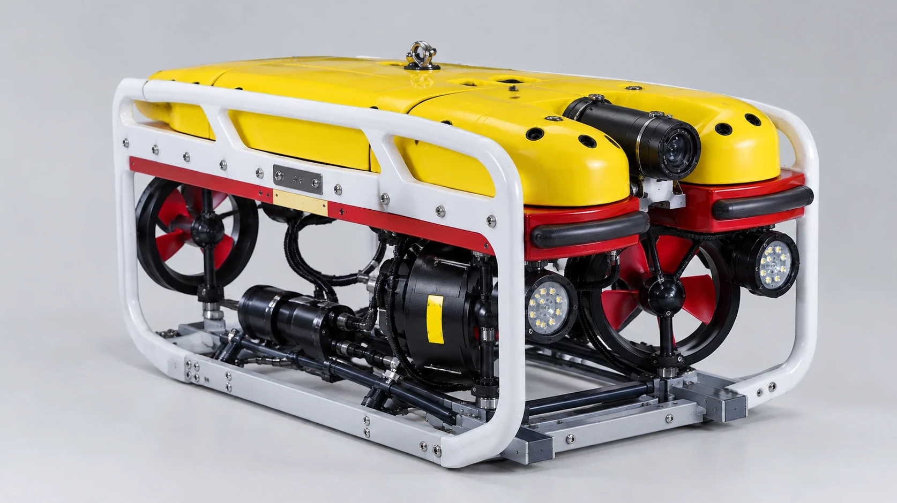

Hull and bottom survey
Travels along the side and under the bottom, streaming the picture to the pilot without interruption.
Underwater hull inspections completed within 3 hours of anchoring. Certified divers and a Falcon underwater drone. Inspection report and video in line with Russian Government Decree No. 1867.
We inspect what is hidden under water: the hull, the bottom, the propeller and rudder. We look for foreign objects, explosives and signs of tampering — before they become a problem.
— 0 m Who we work for
— 0 m Services
Certified divers only. Hull, bottom, propeller and rudder are checked for foreign objects, explosives and signs of tampering.
↗A remotely operated vehicle with a camera and floodlights. Live video on a monitor on deck. Ideal when diving is difficult.
↗Every inspection is filmed underwater. You receive a report and video in line with Decree No. 1867 of 25.11.2025.
↗Documents go to you and to the supervisory authorities promptly, via secure channels.
↗— 0 m New service

You see the underwater part of your vessel on a monitor during the inspection — no waiting for a report.
The pilot operates the drone from deck: guides it along the hull, stops at any area of interest and records video for the report. You or your master can watch the live feed next to the pilot and ask to take a closer look at any spot.
The drone is light and quick to launch, so the inspection fits into your port stay and doesn't delay the vessel. Where diving is difficult, the drone goes first — no one takes unnecessary risks.
The vehicle is a Saab Seaeye Falcon, a professional remotely operated vehicle (ROV).
— 0 m Benefits
Travels along the side and under the bottom, streaming the picture to the pilot without interruption.
Films the propeller, rudder, sea chest gratings and other complex areas in detail.
On-board lighting gives a detailed picture even at depth and in murky water.
Holds position at a suspicious area so it can be examined and recorded without haste.
Preliminary survey and hard-to-reach areas where sending a diver is complicated.
Combined with a diver inspection in one visit — faster and more reliable.

“You see what we see. Every inspection is recorded on video and attached to the report.”
Book a drone inspection— 0 m Real work
Real footage from our divers: along the side, under the bottom and at the propeller. Every client receives this kind of material together with the report.
— 0 m Our guarantees
A vessel inspection takes no more than three hours from the moment of anchoring.
Strictly in line with Russian Government Decree No. 1867 of 25.11.2025.
To you and to the supervisory authorities — via secure communication channels.
— 0 m Process
A call, an e-mail or the form on this site
To the required port as soon as possible
Diver and/or drone — up to 3 hours
Per Decree No. 1867
To you and to the supervisory authorities
A one-off inspection or regular fleet service — we discuss every case individually and offer terms that work for you.
— 0 m Ports
Teriberka · Volokovaya · Kulonga — Barents Sea
BaseBaltic Sea
Gulf of Finland
Gulf of Finland
Sea of Japan
Our mobile teams are fully equipped and can be sent to any of these ports at short notice. Arctic experience — in any weather and logistics conditions.
— 0 m References
Confirms a high standard of work, reliability and compliance with the safety standards of major oil & gas projects.
№ 01Oil & gasA positive recommendation from one of Russia's largest oil companies.
№ 02Oil & gas— 0 m FAQ
Didn't find an answer? Give us a call — we'll explain in five minutes.
+7 (911) 312-49-49The price depends on the vessel's length, the port and the format (diver, drone or both). We quote individually — send a request and we'll get back with an offer.
Yes. We do one-off inspections of a single vessel without a subscription — with the same care as for large fleet operators.
An inspection report and video in line with Russian Government Decree No. 1867 of 25.11.2025. We submit them to you and to the supervisory authorities.
The Falcon drone is operated from deck and streams live video to a monitor — convenient for a preliminary survey and for areas where diving is difficult. A diver can examine an area by hand in detail. The best result often comes from both in one visit.
Our mobile teams are fully equipped and are dispatched to the port at short notice. The inspection itself takes no more than 3 hours from the moment of anchoring.
— 300 m Request
Answer four questions — we'll call you back during business hours (Moscow time) with a format and price. Or contact us directly:
General Director — R. Yu. Tomskikh